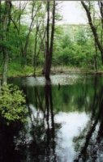
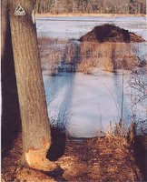

Baker's Meadow
(Video by Andover TV)
Features:
More than 145 species of birds, including herons, migrating ducks and nesting Canadian geese, have been observed in Baker’s Meadow. The wetlands also provide vital habitat for muskrat, mink and beaver (see beaver lodge in picture below).
History:
Baker's Meadow, really a pond, was named for Dr. Symonds Baker, who owned most of the area during the late 18th and early 19th centuries. During the 1920s when muskrat fur was in fashion, Alexander Henderson dammed his land here to form a pond for his muskrats. He was wiped by the 1929 crash, but he maintained the area for small birds and animals. In 1958, Harold Rafton, a tireless conservationist, persuaded the Hendersons to sell their land to AVIS.


Video
Size:
59 acres
Location:
Between Reservation and Argilla Roads on east and West and Oriole Drive on north.
Parking:
Reservation Rd. (limited), West Parish Cemetery, Oriole Drive, and Argilla Rd. (Argilla is narrow and not good for parking). Park on side street and walk to trail between # 31 and #35 Argilla or park on Meadow View Lane and find trail between #1 and #3 Meadow View Lane. There is also a trail entrance at the end of Meadow View Lane.
Warden Information:
Evelyn Retelle
evelynretelle@gmail.com
(978) 475-4412
Norbert & Darlene Ohlenbusch
norbert@9wp.com
(978) 409-7763